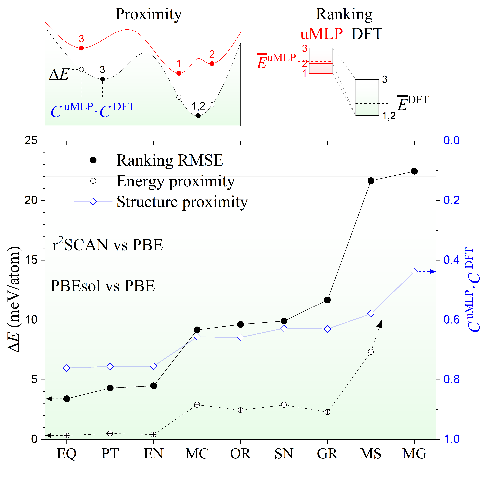
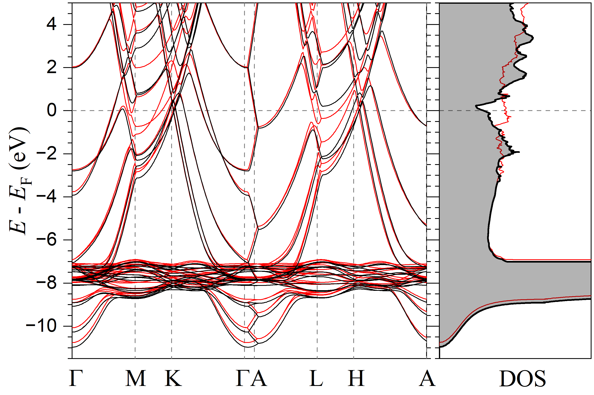
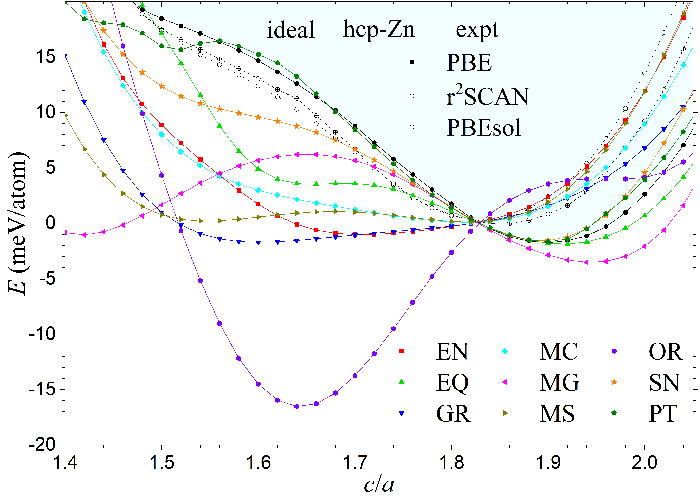
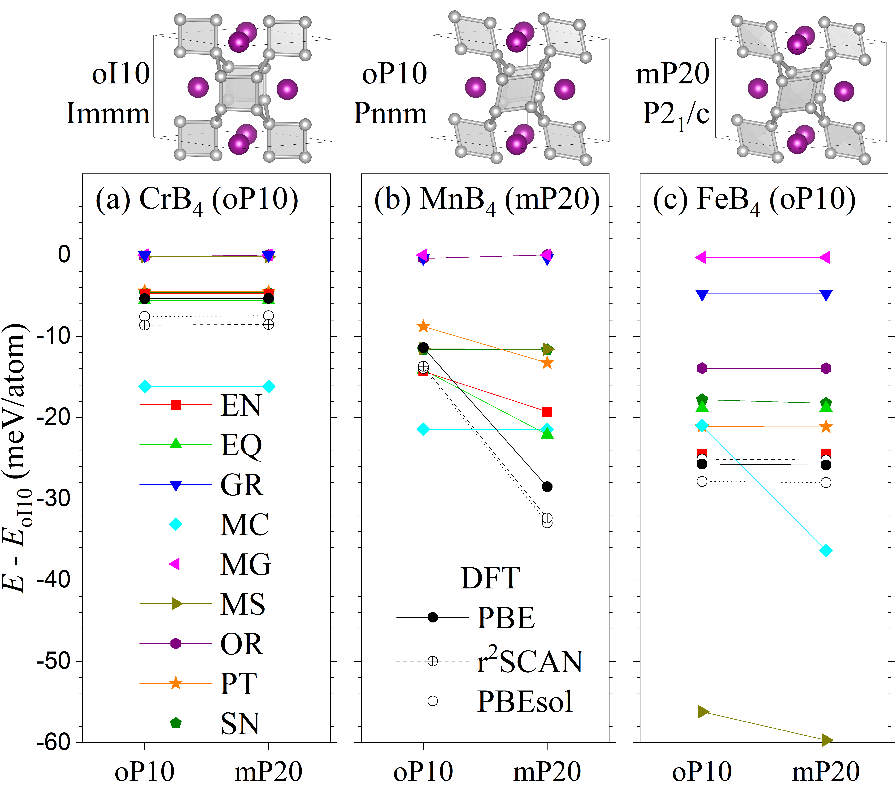
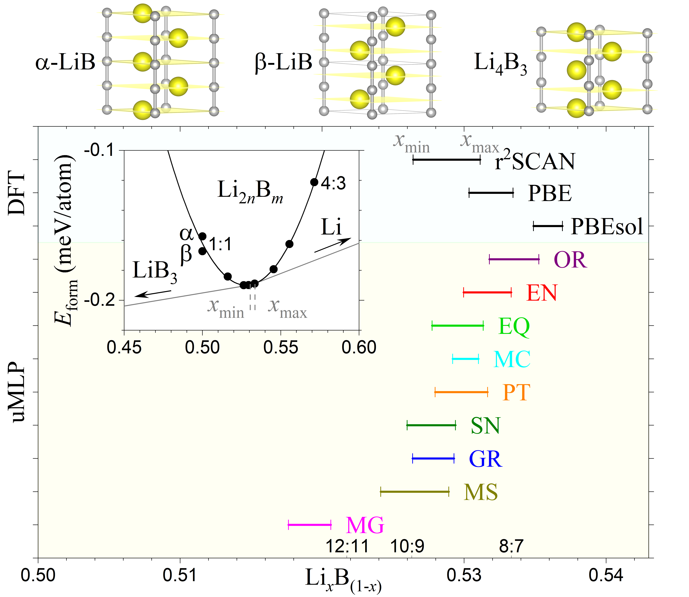
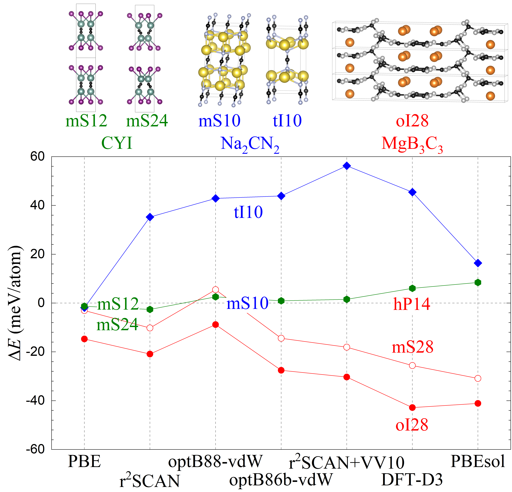

通用机器学习势能找到晶体基态吗：把模型放进真正的结构搜索中检验
论文原文 ↗原文：Edan T. Marcial、Laxman Chaudhary、Olesya Gorbunova、Aleksey N. Kolmogorov，Performance of universal machine learning potentials in global optimization of inorganic crystal structures，arXiv:2602.23515v2。所读稿件内部日期为2026年7月15日，PDF共16页。
给定一种无机化合物的组成，原子究竟会排成什么晶体？常见的计算路线是产生许多候选排布，优化每个候选，再比较能量。密度泛函理论（DFT）通过电子结构计算提供能量和力，但大量重复优化很耗时。机器学习势则从已有DFT数据学习“原子环境与能量、力的关系”，让结构搜索可以更快地进行。
近年来出现的**通用机器学习势（uMLP）**已经在跨元素数据库上训练，使用者不必先为每一种化合物建立专用模型。不过，会优化一个已知晶体，与能从陌生原子排布中找到最低能晶体，是两种不同的能力。搜索会不断产生训练库中少见的成键方式；一旦模型把某种错误结构算得特别稳定，搜索就会偏向它，之后的候选也随之改变。本文把十二种现成势直接装入进化搜索，检验它们能否既找到合理结构，又把真正值得DFT复核的候选留在短名单前面。
一、方法怎样做：先让模型搜索，再用DFT检查它找到的低能结构
作者测试的是常压、零温、非磁性无机晶体，没有对预训练模型作微调。多数模型的参考是PBE密度泛函，PET-MAD的参考是PBEsol；比较时分别使用相应参考，避免把两种电子结构近似的差别直接算成模型错误。
以寻找MgB₃C₃结构为例：先固定组成和搜索晶胞大小，生成一批原子排布，在机器学习势下放松原子位置和晶胞；保留低能候选，再通过改变单个结构、组合两个结构及补入新随机结构，产生下一代。MgB₃C₃较难，作者还用含B—C构筑单元的初始结构加速探索。每轮通常有100个结构，持续100代，约进行一万次局部优化；未找到参考最低相时，最多再尝试四轮。（第3—5页）
这里的局部优化只能把结构送到附近的能量最低点。不同起点可能汇入同一个最低点，这片构型区域称为一个能量盆地。模型需要保留有用盆地，也需要避免制造特别深的假盆地。搜索结束后，作者收集低能极小结构、剔除重复项，再用更严格的精度优化。为了让排名比较不完全受某个模型碰巧找到了多少结构影响，还把不同模型找到的候选合并，交给每个模型重新优化和排序。最后将候选送入DFT再优化，确认它们实际会到达什么结构。
这条流程把三个问题分开了：模型最低点是否接近DFT最低点；竞争结构之间的相对能量是否准确；第一个能回到DFT基态的候选排在第几名。作者的“排序误差”去掉了候选池整体的能量偏移，只保留影响相序的误差。另一项“基态多重性”统计多少个不同模型候选经DFT优化后其实回到同一个基态：数量过大，会让昂贵的复核重复检查同一种结构。

图2｜原文Figure 2，PDF第7页。上方示意“最低点位置接近”与“相对能量排序准确”的区别；下方黑点为排序误差、空心圆为DFT再优化释放的能量、蓝色菱形为结构相似程度。黑色误差越低越好，蓝色相似程度越接近1越好。汇总覆盖11个化合物，不含所有模型共同失败的AgClO₄；简称EQ、PT、EN分别为EquiformerV3、PET-OAM、eSEN。
二、主要结果：实用搜索能力、细微畸变和新竞争结构
1. 有些通用势已能给出紧凑、有用的候选，但一个平均误差说明不了全部
EquiformerV3、PET-OAM和eSEN在这组测试中表现较一致：合并低能池的排序误差分别为3.41、4.31和4.49 meV/atom，每个基态通常只对应约1.1—1.2个模型候选。meV/atom表示每个原子的毫电子伏能差；晶体多晶型之间的竞争往往就在这个尺度上，因此这比对所有高低能结构混合计算一个平均误差更贴近实际筛选任务。（第11页，表III）
一个很能说明问题的对照是EquiformerV2。它的排序误差也很低，为4.22 meV/atom，却平均产生13.4个回到同一DFT基态的候选。它能把最低相选出来，但会把同一相周围的许多小畸变当成独立极小值。M3GNet则属于另一类失败：即使作者用eSEN整理的候选池对它作较有利的测试，其排名表现仍差，模型构型经DFT放松平均释放约65 meV/atom能量。找对、排对和不制造重复最低点，都影响一个势是否真正适合搜索。
共同失败更值得注意。对AgClO₄，十二个模型都偏向含O₂分子的错误低能结构，而已知参考晶体由ClO₄四面体构成。错误候选在多数模型下甚至低出约157—221 meV/atom，足以主导搜索。作者把它解释为特定氧成键环境覆盖不足的压力测试，并提出补充数据重训；本文没有实际完成重训验证。（第5—6页，表II）
2. 找到正确结构类别后，模型仍可能算错很浅的畸变能谷
Zn是一个直观例子。六方密堆积结构有基面晶格常数a和轴向晶格常数c，理想密堆积的c/a约为1.633，Zn的零温实验外推值却为1.826。这个拉长与电子结构有关：不同层堆垛改变能带，在费米能附近形成电子态较少的区域，即赝隙，能够带来稳定化。

图3｜原文Figure 3，PDF第8页。黑线为六方密堆积Zn，红线为面心立方堆垛Zn；左侧沿不同电子波矢位置比较能带，右侧比较态密度。纵轴零点是费米能，黑线在其附近的态密度凹陷说明相似局部配位仍可对应不同电子稳定化。
作者先优化每种模型下的体积，再固定该体积扫描轴比，看模型能否把浅能谷的位置算对。PBE、PBEsol和r²SCAN的最低点分别为1.894、1.826和1.840。SevenNet、EquiformerV3和PET-OAM能再现大轴比；eSEN等模型则给出过于平坦的曲线，理想轴比至实验轴比间只有约2 meV/atom变化；Orb-v3偏好接近理想密堆积的位置。（第8页）

图4｜原文Figure 4，PDF第8页。横轴为无量纲轴比c/a，纵轴为相对能量；每条曲线均在实验轴比1.826处设为零。读图要看最低点位置与曲线形状，而不只是曲线是否经过实验位置。
这类检查还扩展到CrB₄、MnB₄和FeB₄。三者有相近的硼骨架，但金属元素改变后，最低能畸变不同：Cr、Fe偏好硼四元单元倾斜的正交结构，Mn还会使金属链形成交替长短距离的二聚化，进入更低对称的单斜结构。EquiformerV3、eSEN和PET-OAM能同时识别三种化合物的正确最低结构；对MnB₄，它们再现的短Mn—Mn距离与PBE相差不足1%。这说明部分几何势已能隐含学到电子数变化引起的结构能量差异。（第9页）

图5｜原文Figure 5，PDF第9页。上方给出未畸变、正交畸变和单斜畸变结构；下方三组分别为Cr、Mn、Fe。纵轴以未畸变oI10为零，越负越稳定。括号中标出各化合物正确最低相；oP10、mP20等是结构类型标记。
LiBᵧ提供了另一种细微考题。它由线性B链和Li子晶格组成，两个子晶格的周期可以不完全匹配；最低能组成在Li略富集、y约0.9处。作者改变Li/B比例，拟合形成能随组成的变化，并通过与其他组成的相分解竞争确定稳定区间。所有模型都把能量最低点放在Li富集侧，但拟合曲率只有PBE的60%—85%：它们知道最佳组成大致在哪里，却普遍低估偏离最佳组成的能量代价。不同DFT泛函自身给出的稳定区间也有明显差别。（第10页）

图6｜原文Figure 6，PDF第10页。横轴是Li原子分数，各横线表示相应方法得到的零温稳定区间；插图展示形成能曲线及通向LiB₃、Li端点的切线。能量曲线最低点与能够抵抗分解的整个组成区间是两个不同结果。
这三种微扰测试共同说明：正确识别一种晶体，还不足以保证模型适合研究它的结构响应或相变。所需能量差越小，越需要检查相应的变形方向与竞争端点。
3. 搜索发现了新的MgB₃C₃竞争结构，也揭示了参考DFT的相序差异
前述MgB₃C₃搜索得到oI28结构，其B—C骨架通过sp³连接形成三维网络。此前候选主要是层状结构，而新结构在所有被测试的DFT近似下都更稳定。因此，从层状前驱体移走部分金属，并不保证最终最稳定骨架仍保持层状；三维重构是必须考虑的竞争可能。（第6页，图1）

图1｜原文Figure 1，PDF第6页。上方比较CYI、Na₂CN₂和MgB₃C₃的结构；下方横轴为不同DFT泛函，纵轴为相对已报道结构的能差。红色MgB₃C₃新相在各方法下都位于零线下方，而另两类结构的优势明显依赖泛函。
Na₂CN₂新候选则不同：PBE让一种更疏松排布低1.9 meV/atom，其他被测泛函却让它高16—56 meV/atom。层状CYI的新排布也只得到部分泛函支持。本文因此同时区分了“模型没有复现参考”与“参考电子结构近似本身改变相序”：代理模型越接近DFT，也越可能继承DFT的系统偏差。
三、贡献在哪里：用最终搜索任务定义势的可靠性
本文给出的实质进展，是证实部分现成通用势已经能够承担有用的无机晶体探索，而专用势不再总是必需的起点。更重要的是，它把评价对象从固定数据库的能量标签移到了实际搜索中的盆地、短名单和DFT终点。平均误差相近的模型，可能产生完全不同的搜索行为；同一个模型在不同微扰问题上，也未必维持同样的准确性。
材料方面最明确的新候选是三维MgB₃C₃，Zn、四硼化物和LiBᵧ则主要用于检验模型对已有结构规律的复现。关键边界是：本文结论来自有限的常压非磁性、零温体系；合并池中的基态排名不是独立随机搜索成功概率，有限重复也不足以完全分离模型误差与随机漏检。MgB₃C₃候选尚没有相应合成及转化动力学验证。本地16页PDF未附独立补充材料，以上解释与主图均以已读正文为准。
附：原始摘要完整中文翻译
通用机器学习势（uMLP）的快速发展和训练数据集的扩充正在重塑原子尺度模拟的最新技术水平，这凸显了同步开展系统性能力基准测试的必要性。全局优化是uMLP最具挑战性的应用之一，因为不受约束的探索会探测参考数据集中不存在的结构基元。我们在不受约束的进化搜索中考察了十二种预训练uMLP，以评估这些模型能否在常压下、跨越多种无机体系，一致地预测复杂非磁性晶体结构的基态。我们的结果表明，所考察的M3GNet、MACE-MATPES、MACE-mh-1、SevenNet、EquiformerV2、EquiformerV3、MatterSim、GRACE、eSEN、Orb-v3、PET-MAD和PET-OAM模型，在分辨低能盆地内竞争相方面的能力跨度很大，从接近第一性原理水平到基本不具备预测能力。对hcp-Zn、MB₄（M＝Cr、Mn和Fe）以及LiBᵧ（y约为0.9）基态的额外测试揭示，若干uMLP能够捕捉由细微电子结构特征引起的微小能量差异。